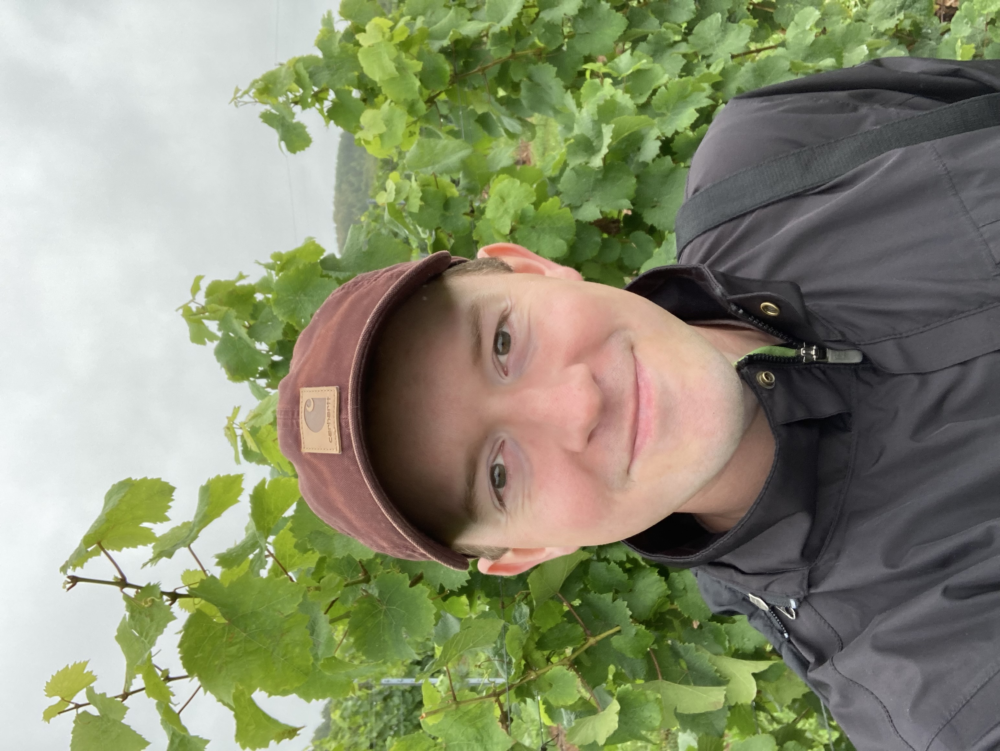

Our research develops a mechanistic understanding of how plants tolerate or avoid injury in environments with sub-optimal temperatures. We use this information to predict how woody perennial crops respond to changing climates, identify novel phenotypes for breeding programs, and develop sustainable management strategies to improve production.

Kentville Research Station
Agriculture and Agri-Food Canada
Kentville, Nova Scotia, Canada
News
September 2 2023: The Willick lab says goodbye to our summer undergraduate research students. Thank you all for your hard work!
July 25 2023: Dr Ian Willick gave an invited talk at the International Fruit Tree Association tour on the effects of fall pneumatic defoliation in apples on cold hardiness and apple blush.
May 5 2023: Our post Feb 2023 freeze report regarding potential injury to apple trees in the Annapolis Valley is available here.
May 1 2023: Two new undergraduate summer students, Erin Frankland and Grace Hennebery-McNeil joined the lab. Welcome Erin and Grace!
April 14 2023: Our special issue on advances in cold hardiness is now available in Physiologia Plantarum.
April 12 2023: New editorial in collaboration with Drs. Daisuke Takahashi and Guillaume Charrier discussing cross-disciplinary insights into the mechanisms of plant cold hardiness in Physiologia Plantarum.
March 1 2023: Ms. Emma Rand has joined the Willick Lab as a technician. Emma will support remote sensing research projects. Welcome Emma!
November 3 2022: New paper in collaboration with Dr. David Lowry at Michigan State University assessing how photoperiod influences the threshold temperatures required to induce cold acclimation in lowland, coastal and upland switchgrass ecotypes in Physiologia Plantarum.